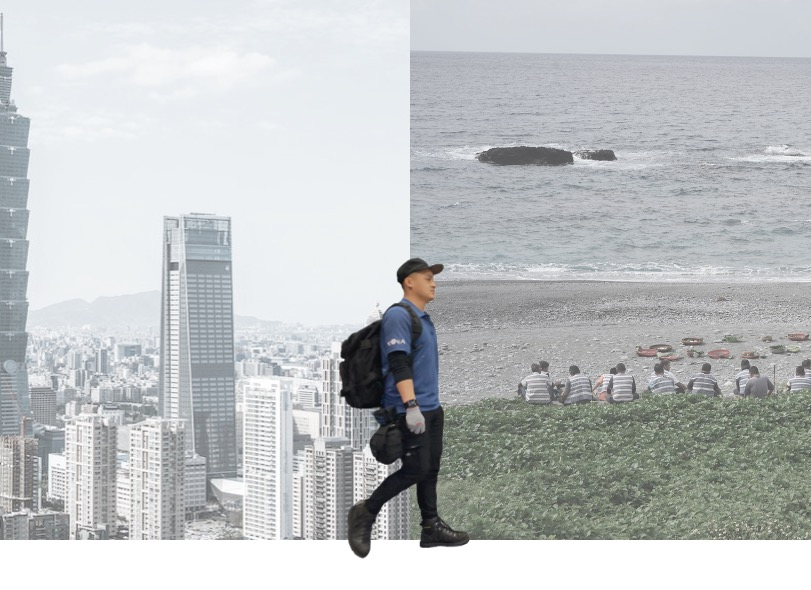
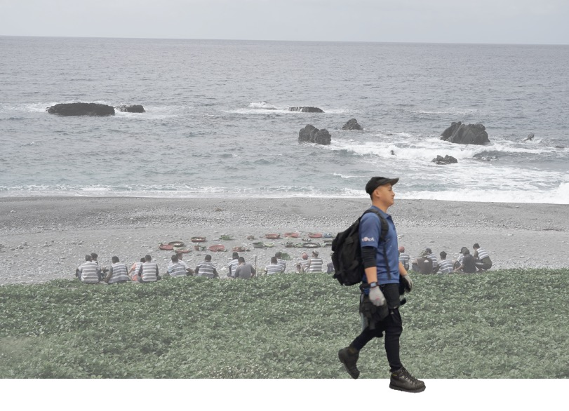
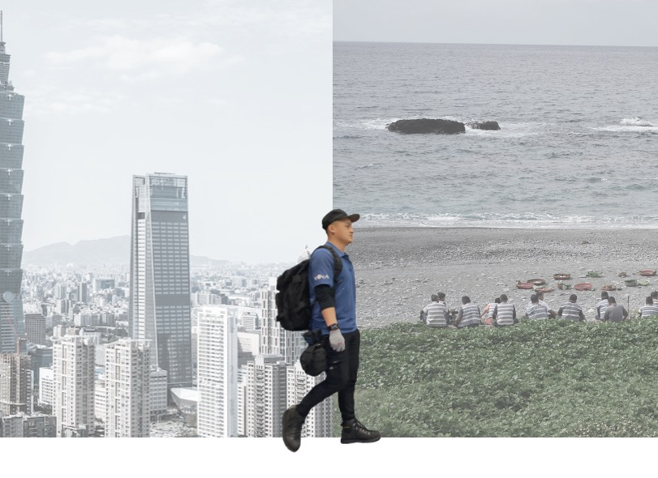
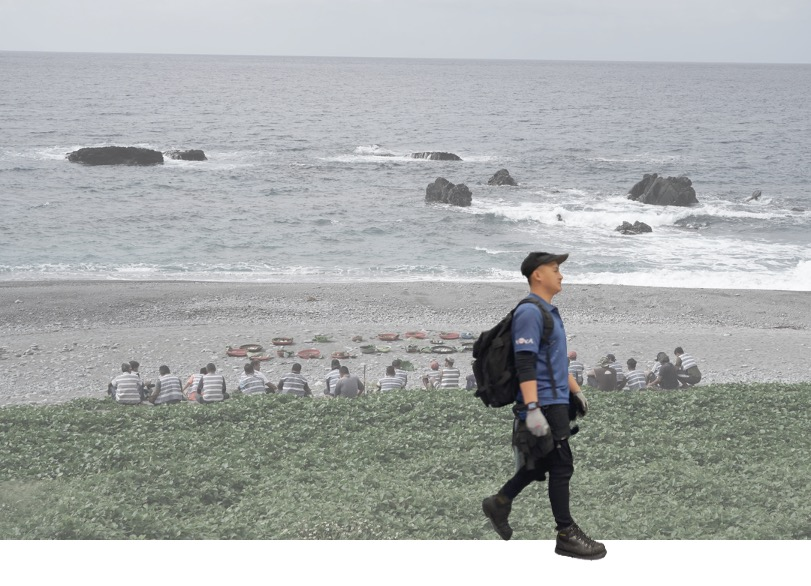
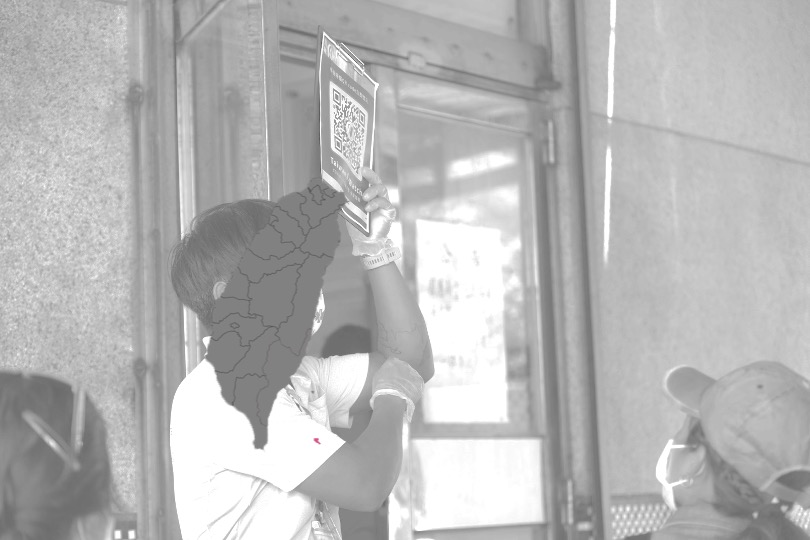
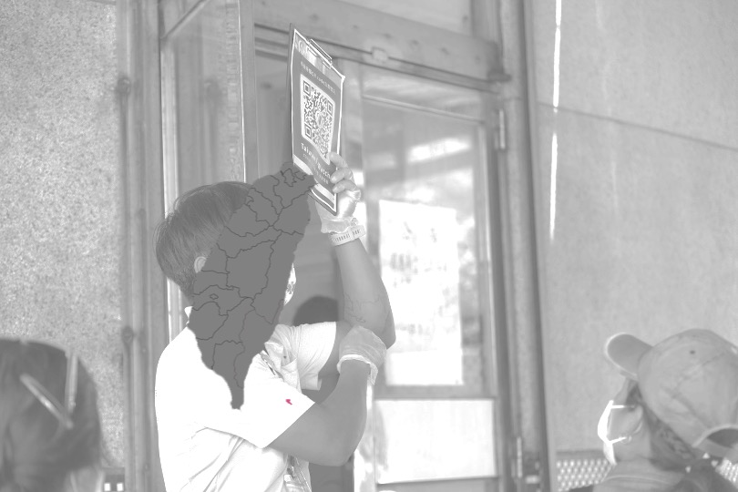

Si Jiayod ，28歲｜ 職業：除蟲人員｜ 座標：台北
從台東機場起飛。
搭乘19人座的小飛機。
飛越太平洋，二十分鐘後便可以抵達。
蘭嶼，
一個僅有五千多居民，擁有獨特達悟文化的美麗島嶼。
每年旺季，蘭嶼會有超過十萬名觀光客湧入。 這座小島的悠閒步調與人情味，讓許多旅人眷戀不已， 說自己得了「蘭嶼病」。
然而，對於生長於這塊土地上的達悟族人來說，
蘭嶼病是更漫長而悠遠的。
家，是一個想回，但沒那麼容易回得去的地方。
Si Jiayod ，28歲｜ 職業：除蟲人員｜ 座標：台北
童年
“有時，我們也會去潮間帶找九孔，
帶回家給媽媽煮，晚上就可以加菜。”
“但，快樂的童年不長，蘭嶼全島只有一所中學，
國中開始，我們就必須住校，
到了高中，幾乎大部分的人都會離開蘭嶼，去台東讀書。”
離家
“我來到台東農工（現台東專科學校）讀書。”
“我的夢想是打職棒，學校球隊教練看我投球速度蠻快，就讓我加入。”
“但是，台灣的文化跟蘭嶼完全不一樣，球隊訓練也好嚴格，學長學弟制讓人喘不過氣。”
“我每天都睡不飽，學業也退步，撐了一陣子，還是決定退隊了。”
“夢想的這一記揮棒，算是落空了。”
“幸好，我還有一起從蘭嶼來的朋友們，”
“即使常常有一餐沒一餐、因為蘭嶼人身份被欺負，有朋友在，也就度過了。”
打拼
“大學畢業後，我跟著同學和部落的叔叔們，來到台中做板模工。 每天不到六點就要起床，準備上工。”
“做工不僅耗體力， 不論是30度的烈日，或不到10度的刺骨寒流， 都必須上工，才能維持收入。”
“中午，我們就舖幾張紙板， 躺著睡個二十分鐘，再起來繼續工作。 工地風險比較高，幾年下來，我身上多了大大小小的「印記」。”
回家嗎？
 



“四年前，經過朋友介紹，我來到台北擔任除蟲人員。”
“我考到執業證照、學習環境防治知識，也開始經營、拓展自己的客戶群，慢慢有了在都市安身立命的感覺。”
“但是，我心中一直沒有忘記要回家。”
“這幾年，耆老相繼過世”
“年輕人不會講族語了，造舟、捕魚技藝也正在失傳。 核廢料、土地規劃等議題，也從來沒停過。”
“但是，我好不容易累積到現在的工作成果， 難道要全部放棄嗎？”
“回去蘭嶼，我會不會與台灣社會脫節、 失去競爭力？”
Jiayod的故事，是許多蘭嶼人必經的人生旅程。
原本獨立生活的島嶼，從1967年對外開放後，
雅美（達悟）族人跨越大海、流向台灣，
短短幾十年內，形成了不同的面貌。
.jpg) 

1967年，蘭嶼撤除山地管制，正式對外開放。外資開始進入蘭嶼。
當時的台灣，在戰後「山地平地化」及「伐木外銷爭取外匯」等政策的影響下，
政府開始經略龐大的山林資源，進行林班地的盤點、砍伐及育林等工作。
這個時期，族人主要赴台東、屏東一帶，從事他們相對熟悉的林班工作。
待族人對台灣的勞動市場稍微熟悉後，開始拓展至捆工、建築鐵工等粗工工作。
1980年前後，台灣經濟如日中天，十大建設、加工出口區等需要大量基礎勞力， 族人移往西部，進入新北、桃園、新竹、彰化的鞋廠和紡織廠工作， 也有越來越多族人投入板模行業。
2000年左右，蘭嶼觀光業興起， 吸引較多族人回流到家鄉，經營民宿或餐廳。
直至今日， 族人在台時間變長、網際網路發達、族人大學以上學歷增加等因素， 使族人就業面貌越來越多元。
蘭嶼人旅台討生活，短短數十年的歷史， 從早期初到台灣的不適應，讓許多族人只能在許多暗夜裡思念家鄉， 如今網際網路的發展、觀光業的興起、交通的便利， 讓年輕一輩在台灣的社會中更快融入， 蘭嶼人和家之間的物理距離，也縮短非常多
然而，Jiayod的困擾，也是許多族人的掙扎。
傳統文化快速消失的同時，
族人與台灣社會的緊密連結，使得族人離家，越來越遠。
二十年後的蘭嶼，會變成什麼樣子呢？
山上的芋頭田，還有人耕種嗎？
還會有長輩吟唱族語歌謠，在家中等待孩子從台灣歸來嗎？
Mapazaka 四道門之歌
anopinasalaong
kanosinavongam pey
palanangen molamen
tadannamen imoa
kavolovolodan
kavolovolodan o
kamooa molonan namendalooaji
lokolokot name na
malagomdova lehey
（父親）把藤製成的飾品掛在你（孩子）身上，
希望你能使家族興旺，
希望住在這個家裡的人，
長壽並且有好運勢，
一代一代流傳下去，
直到我們都離開為止。
歌謠吟唱 / 朗島部落耆老 謝家輝 Syapen Meylamney
封面提供 / 住商不動產 尤阿甘
內文照片提供 / 陳彥銓、蘇煒程、Si Moyang
受訪 / Si Jiayod
採訪、網頁設計 / 蔡明翰、章璟、袁兆遠